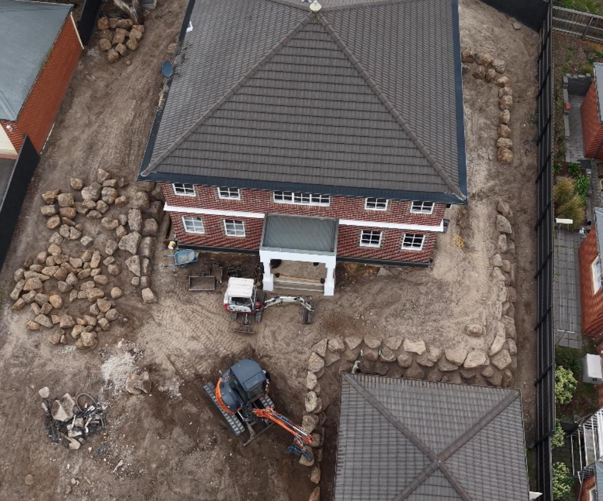
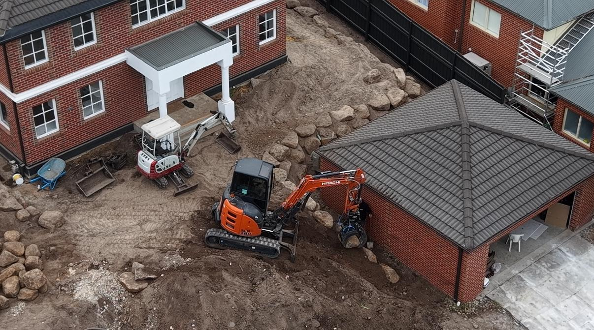
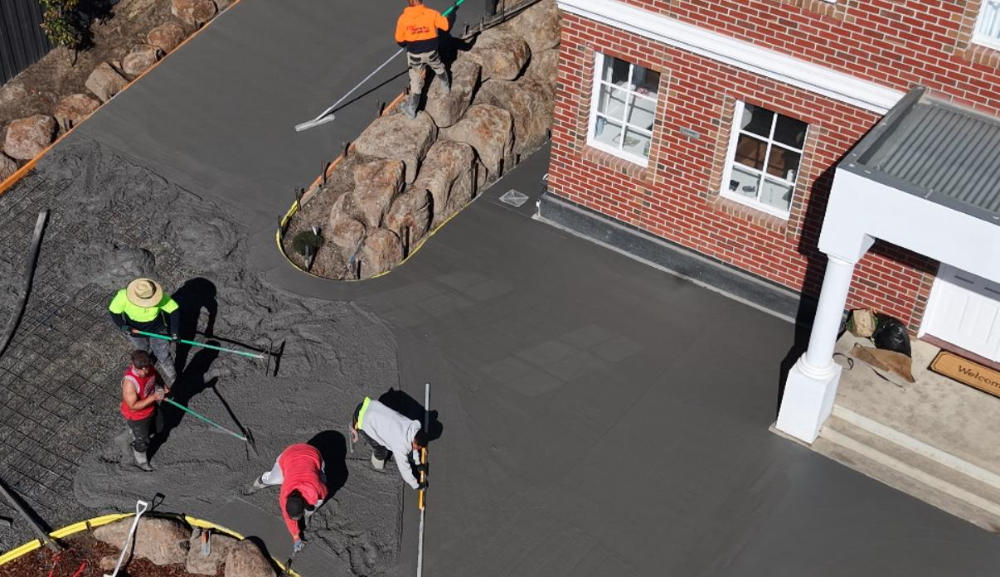
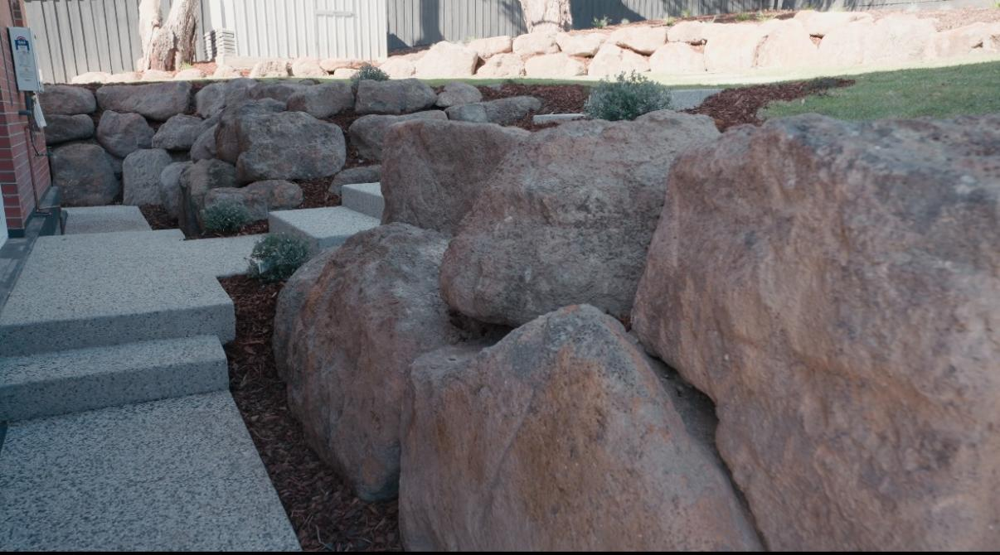
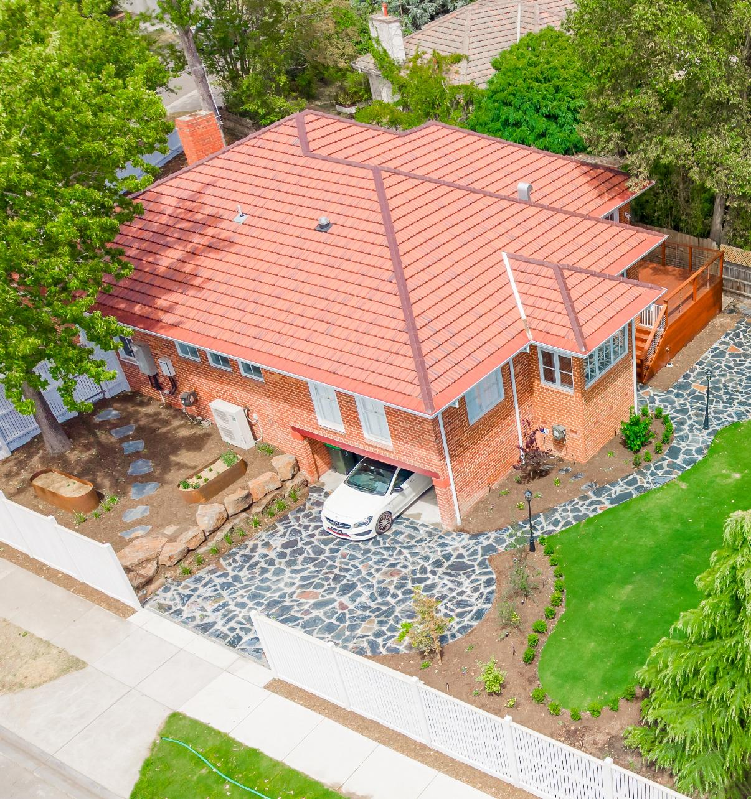

Programme integration
Milestones tracked against your build programme. Earthworks and infrastructure that start in parallel with framing, not after lock-up.
Builders & developers
We work with custom builders, volume builders, medium-density developers and large residential project teams. Earthworks, civil, structure, landscape and finishing delivered under one in-house team, on programme, ready for practical completion.
A single point of accountability for the external works package. No subcontractor stitching, no slipped milestones, no surprise scope drift at handover.
The brief
Builders and developers run to programmes. Slipped external works mean slipped practical completion, which means slipped settlement, which means stress at the wrong end of the build. The landscape contractor that arrives at practical completion to lay turf around three trades worth of issues is the contractor that costs the programme weeks.
ANKS works differently. Earthworks and infrastructure can start while the home is being framed. Hardscape and structure resolve alongside the construction sequence. Planting and finishing land on practical completion week. The external works package becomes a coordinated piece of your build, not a separate problem to manage at the end.

Scope

Milestones tracked against your build programme. Earthworks and infrastructure that start in parallel with framing, not after lock-up.

Bulk and detail excavation, cut and fill, levels resolved against the architectural drawings. Sub-base preparation ready for civil works.

Driveways, paths, services trenches, drainage and sub-base. The infrastructure that carries the landscape and the home's external presentation.

Boulder, sandstone, masonry and concrete retaining. Structural elements that handle difficult sites, sloping blocks and graded levels.

Planting, turf, hedging, garden beds and feature trees. Finishing details that present the home at handover and establish well after.

Walk-through inspection, snag-list resolution before PC, warranty documentation and defects period support. Handover ready to settle.
Who we work with
For custom builders
We slot into the build sequence as the external works partner. Earthworks during framing, structure and hardscape through lock-up, planting and finishing on PC week. Coordinated with the architect, the site supervisor and the client.
For volume & project builders
We can run repeatable external works packages across a builder's project pipeline. Standardised scope of works, predictable pricing structure, reliable turnaround at PC. Less variability in the line item you have least control over.
For developers
Medium-density and townhouse projects, estate works, staged residential developments. We deliver the external works package across the site, coordinate with the main contractor and authority requirements, and hand over staged ready for occupation.



Where we work
We deliver builder and developer external works across metropolitan Melbourne and into regional Victoria, available across the north, east and south-east, plus the Murray region. Repeat-builder relationships are how we like to work.
Common questions
Yes. We programme our works against your build schedule, attend programme meetings where required, and track milestones to the day. Earthworks and infrastructure can start while the home is being framed so the external works are not the bottleneck at practical completion.
Walk-through inspection with the site supervisor before PC, snag-list resolution inside the agreed window, warranty documentation aligned with the head contract, and ongoing support through the defects liability period. Establishment-period planting checks where the project includes soft landscape.
Yes. Where the external works require council, water authority or building surveyor sign-off, we handle the approvals as part of the scope. Certification documentation is provided at handover.
Yes. Volume and project builders running a pipeline of similar homes can use us as a repeatable external works partner. Standardised scope templates, predictable pricing structure, single point of contact across multiple builds.
From single custom home external works through to multi-stage medium-density and estate works. We are comfortable on both fixed-price and schedule-of-rates contracts depending on how the head contract is structured.